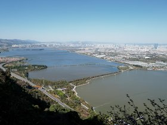
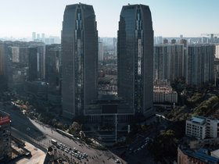

kunming/20240308-DSC01491.jpg
kunming/20240308-DSC01418.jpg
kunming/20240308-DSC01371.jpg
kunming/20240308-DSC01256.jpg
kunming/20240308-DSC01219.jpg
kunming/20240308-DSC01161.jpg
kunming/20240308-DSC01030.jpg
kunming/20240308-DSC00976.jpg
kunming/20240308-DSC00905.jpg
kunming/20240308-DSC00857.jpg
kunming/20240307-P1080871.jpg

kunming/20240307-P1080792.jpg

kunming/20240307-DSC00709.jpg
kunming/20240307-DSC00648.jpg
kunming/20240307-DSC00606.jpg

kunming/20240307-DSC00600.jpg
kunming/20240307-DSC00575.jpg
kunming/20240307-DSC00573.jpg

kunming/20240307-DSC00550.jpg
kunming/20240307-DSC00507.jpg